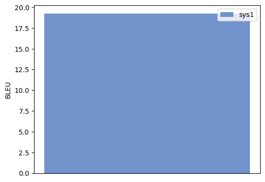
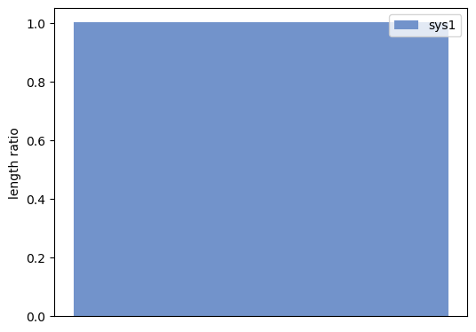
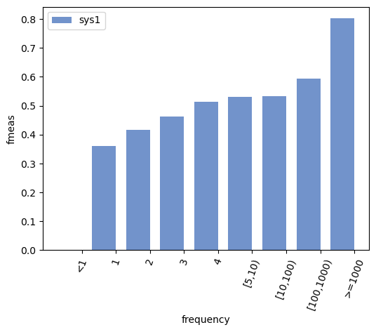
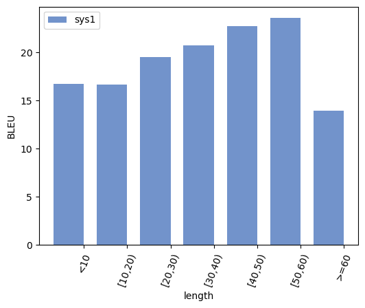
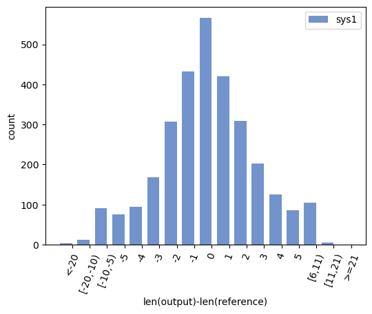
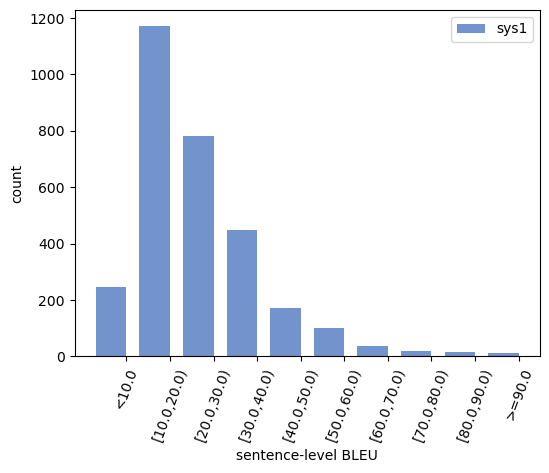

compare-mt Analysis Report
Aggregate Scores
\begin{table}[t]
\centering
\begin{tabular}{c||c}
& sys1 \\ \hline \hline
BLEU & 19.2706 \\
\end{tabular}
\caption{Caption}
\label{tab:table001}
\end{table}
\begin{figure}[h]
\centering
\includegraphics{001-score-bleu.pdf}
\caption{Score Comparison}
\label{fig:001-score-bleu}
\end{figure}
length ratio | |
sys1 |
| length ratio |
1.0010 (ref=55527, out=55584) |
\begin{table}[t]
\centering
\begin{tabular}{c||c}
& sys1 \\ \hline \hline
length ratio & 1.0010 (ref=55527, out=55584) \\
\end{tabular}
\caption{Caption}
\label{tab:table002}
\end{table}
\begin{figure}[h]
\centering
\includegraphics{002-score-lengthrat.pdf}
\caption{Score Comparison}
\label{fig:002-score-lengthrat}
\end{figure}
Word Accuracies
\begin{table}[t]
\centering
\begin{tabular}{c||cc}
frequency & sys1 & Examples \\ \hline \hline
\textless1 & 0.0000 & \textlessa href="003-wordacc-frequency.html#bucket0"\textgreaterExamples\textless/a\textgreater \\
1 & 0.3596 & \textlessa href="003-wordacc-frequency.html#bucket1"\textgreaterExamples\textless/a\textgreater \\
2 & 0.4160 & \textlessa href="003-wordacc-frequency.html#bucket2"\textgreaterExamples\textless/a\textgreater \\
3 & 0.4618 & \textlessa href="003-wordacc-frequency.html#bucket3"\textgreaterExamples\textless/a\textgreater \\
4 & 0.5130 & \textlessa href="003-wordacc-frequency.html#bucket4"\textgreaterExamples\textless/a\textgreater \\
{[}5,10) & 0.5311 & \textlessa href="003-wordacc-frequency.html#bucket5"\textgreaterExamples\textless/a\textgreater \\
{[}10,100) & 0.5324 & \textlessa href="003-wordacc-frequency.html#bucket6"\textgreaterExamples\textless/a\textgreater \\
{[}100,1000) & 0.5933 & \textlessa href="003-wordacc-frequency.html#bucket7"\textgreaterExamples\textless/a\textgreater \\
\textgreater=1000 & 0.8023 & \textlessa href="003-wordacc-frequency.html#bucket8"\textgreaterExamples\textless/a\textgreater \\
\end{tabular}
\caption{Caption}
\label{tab:table083}
\end{table}
\begin{figure}[h]
\centering
\includegraphics{003-wordacc-frequency-fmeas.pdf}
\caption{Word Accuracy Analysis}
\label{fig:003-wordacc-frequency-fmeas}
\end{figure}
Sentence Buckets
bucket type: length, statistic type: BLEU | length |
sys1 |
| <10 |
16.7279 |
| [10,20) |
16.6719 |
| [20,30) |
19.5229 |
| [30,40) |
20.7383 |
| [40,50) |
22.7558 |
| [50,60) |
23.5763 |
| >=60 |
13.9690 |
\begin{table}[t]
\centering
\begin{tabular}{c||c}
length & sys1 \\ \hline \hline
\textless10 & 16.7279 \\
{[}10,20) & 16.6719 \\
{[}20,30) & 19.5229 \\
{[}30,40) & 20.7383 \\
{[}40,50) & 22.7558 \\
{[}50,60) & 23.5763 \\
\textgreater=60 & 13.9690 \\
\end{tabular}
\caption{Caption}
\label{tab:table084}
\end{table}
\begin{figure}[h]
\centering
\includegraphics{004-sent-length-bleu.pdf}
\caption{Sentence Bucket Analysis}
\label{fig:004-sent-length-bleu}
\end{figure}
bucket type: len(output)-len(reference), statistic type: count | lengthdiff |
sys1 |
| <-20 |
3 |
| [-20,-10) |
13 |
| [-10,-5) |
91 |
| -5 |
76 |
| -4 |
94 |
| -3 |
169 |
| -2 |
307 |
| -1 |
433 |
| 0 |
566 |
| 1 |
421 |
| 2 |
309 |
| 3 |
202 |
| 4 |
126 |
| 5 |
86 |
| [6,11) |
105 |
| [11,21) |
6 |
| >=21 |
0 |
\begin{table}[t]
\centering
\begin{tabular}{c||c}
lengthdiff & sys1 \\ \hline \hline
\textless-20 & 3 \\
{[}-20,-10) & 13 \\
{[}-10,-5) & 91 \\
-5 & 76 \\
-4 & 94 \\
-3 & 169 \\
-2 & 307 \\
-1 & 433 \\
0 & 566 \\
1 & 421 \\
2 & 309 \\
3 & 202 \\
4 & 126 \\
5 & 86 \\
{[}6,11) & 105 \\
{[}11,21) & 6 \\
\textgreater=21 & 0 \\
\end{tabular}
\caption{Caption}
\label{tab:table085}
\end{table}
\begin{figure}[h]
\centering
\includegraphics{005-sent-lengthdiff-count.pdf}
\caption{Sentence Bucket Analysis}
\label{fig:005-sent-lengthdiff-count}
\end{figure}
bucket type: sentence-level BLEU, statistic type: count | sentbleu |
sys1 |
| <10.0 |
247 |
| [10.0,20.0) |
1170 |
| [20.0,30.0) |
782 |
| [30.0,40.0) |
449 |
| [40.0,50.0) |
173 |
| [50.0,60.0) |
102 |
| [60.0,70.0) |
38 |
| [70.0,80.0) |
18 |
| [80.0,90.0) |
15 |
| >=90.0 |
13 |
\begin{table}[t]
\centering
\begin{tabular}{c||c}
sentbleu & sys1 \\ \hline \hline
\textless10.0 & 247 \\
{[}10.0,20.0) & 1170 \\
{[}20.0,30.0) & 782 \\
{[}30.0,40.0) & 449 \\
{[}40.0,50.0) & 173 \\
{[}50.0,60.0) & 102 \\
{[}60.0,70.0) & 38 \\
{[}70.0,80.0) & 18 \\
{[}80.0,90.0) & 15 \\
\textgreater=90.0 & 13 \\
\end{tabular}
\caption{Caption}
\label{tab:table086}
\end{table}
\begin{figure}[h]
\centering
\includegraphics{006-sent-sentbleu-count.pdf}
\caption{Sentence Bucket Analysis}
\label{fig:006-sent-sentbleu-count}
\end{figure}